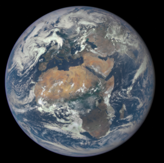

Солнечная Система
 Солнце - это звезда, вокруг которой вращаются следующие планеты со своими спутниками:
Солнце - это звезда, вокруг которой вращаются следующие планеты со своими спутниками:
- Меркурий
- Венера
- Земля
- Марс
- Юпитер
- Сатурн
- Уран
- Нептун
- Плутон
- Звезда
- Массивное самосветящееся небесное тело, состоящее из газа и плазмы
- Метеорид
- Небесное тело, промежуточное по размеру между космической пылью и астероидом
- Называют метеором, если он влетает в атмосферу Земли с огромной скоростью
- Астероид
- Относительно небольшое небесное тело Солнечной системы, движущееся по орбите вокруг Солнца
- Планета
- Небесное тело, вращающееся по орбите вокруг звезды или её остатков
- Планета-гигант
- Газовый гигант - состоит в основном из водорода и гелия
- Ледяной гигант - состоит в основном из элементов тяжелее водорода и гелия

 Земля́ — третья по удалённости от Солнца планета Солнечной системы. Самая плотная, пятая по диаметру и массе среди всех планет Солнечной системы и крупнейшая среди планет земной группы, в которую входят также Меркурий, Венера и Марс. Единственное известное человеку в настоящее время тело во Вселенной, населённое живыми организмами.